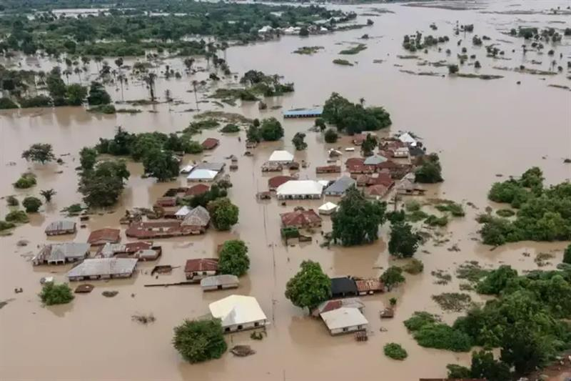

Mokwa Flash Flood
Nigeria • 29 May 2025

Flooded neighbourhoods in Mokwa following the catastrophic flash flood of 29 May 2025. Source: Nigerian AFP
Overview
During the night of 28–29 May 2025, the market town of Mokwa, located in Niger State, north-central Nigeria, experienced one of the country’s deadliest flash floods in recent decades. Several hours of exceptionally intense overnight rainfall triggered rapidly rising floodwaters that inundated low-lying neighbourhoods, destroyed homes and critical infrastructure, and swept away entire communities while many residents were asleep. :contentReferenceoaicite:0
The disaster caused more than 150 confirmed fatalities, left many people missing, displaced thousands of residents, and severely disrupted transportation after roads and bridges were washed away. Relief agencies also reported widespread losses of homes, farmland, livestock, and local businesses, highlighting the vulnerability of rapidly growing communities to short-duration, high-intensity rainfall events. :contentReferenceoaicite:1
Humanitarian impacts
According to the ReliefWeb disaster profile (FL-2025-000078-NGA) and humanitarian situation reports:
- Event: Flash flood
- Location: Mokwa, Niger State, Nigeria
- Date: 29 May 2025
- Hazard trigger: Intense overnight rainfall
- Fatalities: More than 150 people reported dead
- Displacement: Thousands of residents displaced
- Infrastructure: Homes, roads, bridges and public facilities severely damaged
- Livelihoods: Significant impacts on agriculture, markets and local businesses :contentReferenceoaicite:2
Mokwa is an important commercial hub connecting northern agricultural regions with southern Nigeria. Consequently, the destruction of transport infrastructure and markets had impacts extending well beyond the immediate flood zone. :contentReferenceoaicite:3
Satellite observations
To investigate the meteorological evolution of this event, I produced the following animation from geostationary satellite 10.8 μm infrared brightness temperature observations.
The animation covers 23–31 May 2025, allowing the development and propagation of deep convective systems over West Africa to be followed before, during, and after the flood.
Hourly minimum 10.8 μm infrared brightness temperature from 23–31 May 2025.
Meteorological context
The flood occurred during the early stages of the West African monsoon, a period characterised by frequent mesoscale convective systems (MCSs) propagating westward across the Sahel and Sudanian regions. Infrared satellite observations reveal the evolution of deep convective cloud systems whose very cold cloud tops are indicative of intense vertical development and heavy rainfall.
Further analyses to be added include:
- satellite-derived rainfall estimates (e.g. IMERG);
- ERA5 atmospheric circulation and moisture fields;
- synoptic-scale environment;
- rainfall accumulations and return periods;
- event attribution studies, where available.
References
- ReliefWeb Disaster: FL-2025-000078-NGA
- National Emergency Management Agency (NEMA): Link